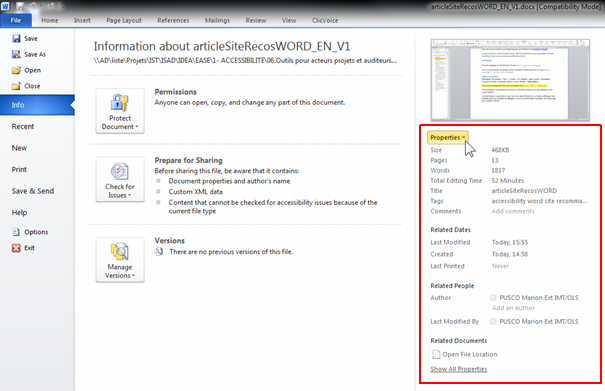
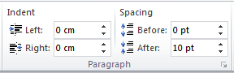
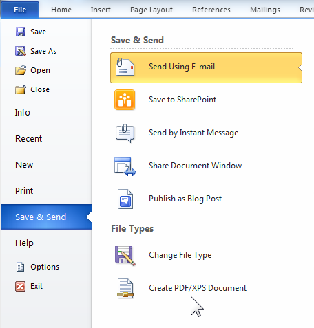
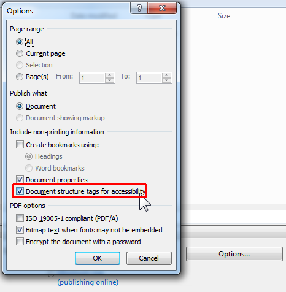

Creating accessible Word documents
Designing accessible Word Documents requires following different rules.
They are summarized below (and detailed guides are available on the WebAIM Website).
In order to help you, Word includes a tool to check the accessibility of your presentation. This tool identifies the main errors and proposes different solutions.
Language #
The main language of the document must be defined in the tab File > Options > Language.
Every change of language within the document must be identified by selecting the text and: tab Review > Language > Set proofing language.
Document properties #
Title, author and tags fields have to be completed in tab File > Info > Properties.

These properties are readable by everyone in Windows Explorer and by the screen readers.
Headings #
Give unique and descriptive headings allow users to clearly understand in which part they are on.
Use a “Heading 1” for the main content heading, and then a “Heading 2” for the major section headings and a “Heading 3” etc. (in the Home panel).
A good heading structure is often the most important accessibility criteria in Word documents.
Screen reader users have the ability to navigate long Word documents by heading structure.
Table of contents #
Provide a table of contents for long documents using tab References > Table of Contents
It allows users to find information more easily in the document.
Wording #
Use simple language: avoid abbreviations and acronyms (explain them at the first occurrence).
If necessary, keep accentuation on capital letters (example: É or Ç): use the Insert tab > Symbol
Formatting / layout #
Use familiar sans serif fonts (such as Arial or Calibri), in a large font size (12pt or larger). Begin all sentences by a capital letter but avoid using all capital letters and excessive italics or underlines.
Use predefined styles for formatting content: "normal" style must be assigned almost everywhere (default style), the "quote" style for quotes, etc.
Avoid justifying the text; prefer left alignment.

Do not use carriage returns to skip rows nor successive tabs ("Tab" key on the keyboard ) for text formatting.
In order to add white space between sentences and paragraphs, use option: right click on the text and select Paragraph… > Indents and Spacing.

Do not use text boxes because their content is not interpreted by screen readers.
Use the page break option via the Insert Tab > “Page Break” menu to move to the next page.
Number pages of your document (Insert Tab > “Page Number”) to allow users to navigate easily.
Note: the « Tabs… » options can let you adjust the Tab stop position.

Colors and contrasts #
Use sufficient contrast between text and background colors #
The presentation of text should have a contrast ratio of at least 4.5:1. Here are some examples on a white background:
- Foreground black : very good contrast, ratio = 21:1
- Foreground #767676 (dark grey), acceptable contrast, ratio = 4.54:1
- Foreground #AAAAAA (lighter grey), unacceptable contrast, ratio = 2.32:1
If you choose to not use the Orange Group colors guidelines, you can download the Colour Contrast Analyser tool; it will be useful for checking your contrasts.
Ensure that color is not the only way to convey content #
For people who cannot see the colors or the shades of colors, it is important to convey content differently.


Bulleted Lists or Numbered Lists #
Always use the appropriate and native functions to create lists:
- Ordered (numbered) lists are used to present a group of items (words, sentences…) that follow a sequence
- Unordered (bulleted) lists are used for a group of items without a sequence

Alternative Text for pictures, shapes, chart, SmartArt graphic, or other graphical content #
The alternative text has to convey the content and the purpose of the image and its context in a concise and unambiguous manner.
Right-click on an image and select Format Picture or Format Shape > Alt Text.
Enter the alt text in the Description text box (but leave Title blank, this information is not conveyed to assistive technologies).
If the picture is only decorative, leave the Description text box blank.
Alternative text helps people who can’t see the screen to understand what’s important in pictures and other visuals.
Note: if you use a layout option other than "In Line With Text" (by right-clicking on the image an “Wrap Text” or the “Picture Tools” Tab), the image and text present in the description of image (Alt Text) will be ignored by some screen readers.
Audio or video file #
For audio and video content, in addition to alt text, be sure the video or audio as well as the player are accessible.
See our recommendations for audio or video files.
Links #
Specify clear and accurate link text: it must make sense as standalone information to understand the destination target.
Specify when links are opened in a new window:
Insert tab > Hyperlink > SreenTip

Note: a blind person asks his screen reader to list all the links on a page. Each link text will therefore be read isolated from its visual context.
Data Tables #
Use a simple table structure, and specify column header information.
Ensure that tables don't contain split cells, merged cells, nested tables, or completely blank rows or columns.
If a table is too complex, you will need to provide an additional description: Right-click Table Properties > Alt Text
Finally, tables should not be used for formatting purposes : use the "Columns" option on the “Page Layout” tab to create a columns layout.
Accessibility Checker #
At least, run Accessibility Checker to make sure your content is accessible. It can detect the main errors and suggests some solutions.
In File tab > Check for Issues.

Important: if you encounter some difficulties, try to save your document from within Word 2010 in ".docx" (or ".pptx") format. The option to "Maintain compatibility with previous versions of Word" has to remains unchecked.
Converting to PDF #
If you want to save you presentation as PDF, select: File tab > Save & Send and create PDF document.
Check if the « Document structure tags for accessibility » option is selected.


Note: with Word 2010, generated PDF documents may have accessibility issues (especially with the images vocalization). These issues have been fixed in later versions of Microsoft Office.
For more detailed information #
- Word Accessibility, WebAIM.
- check PDF document accessibility: download PDF Accessibility Checker (PAC 3).
- Microsoft Accessibility Support website
- (FR) Créer des documents bureautiques accessible DINSIC.